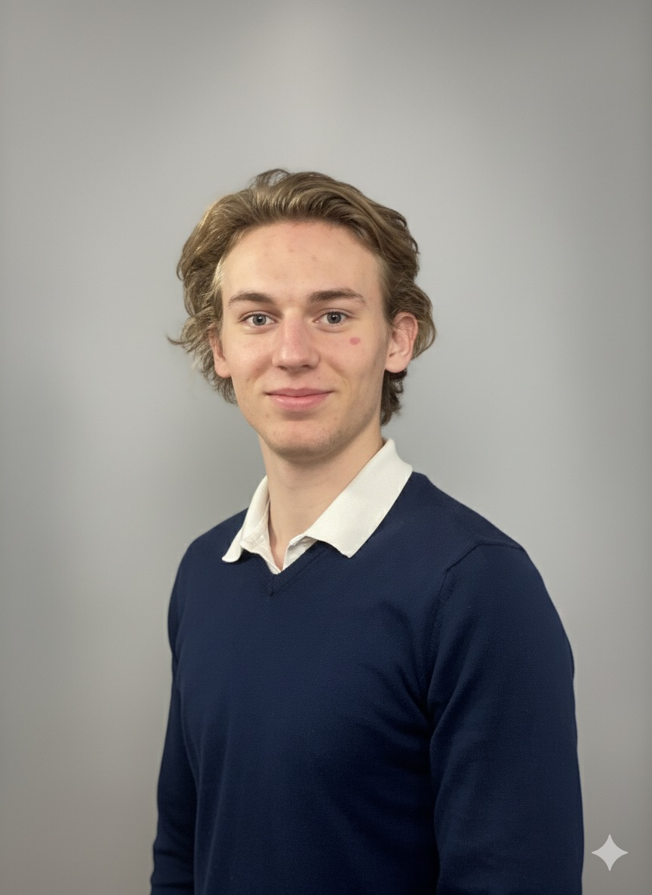

Bienvenue !
Le code, c'est bien. Le voir piloter une machine, c'est mieux ! Étudiant en BUT GEII, je m'appelle MOONEN Bram et je réalise mon rêve : apprendre à m'attaquer à l'automatisme pour donner de l'intelligence au monde réel.

Le code, c'est bien. Le voir piloter une machine, c'est mieux ! Étudiant en BUT GEII, je m'appelle MOONEN Bram et je réalise mon rêve : apprendre à m'attaquer à l'automatisme pour donner de l'intelligence au monde réel.
Piloter le réel, voilà ce qui me fait vibrer ! En tant qu'étudiant en BUT GEII à l'IUT de Gradignan, je ne suis pas juste là pour la théorie ou le code pur. Ce que j'aime, c'est le concret : quand le circuit s'allume, que le moteur tourne et que le système prend vie. Ma double passion ? L'automatisme pour l'intelligence, et l'énergie pour la puissance. Pour moi, l'un ne va pas sans l'autre ! Je veux maîtriser toute la chaîne : du système de contrôle qui donne l'ordre, jusqu'au circuit de puissance qui l'exécute. Je suis en mission : décrocher un stage de deuxième année. Je cherche une entreprise où je pourrai vraiment avoir les mains sur le matériel et contribuer à des défis techniques réels. Ce portfolio est mon labo, la preuve de ce que je construis. Jetez-y un œil !